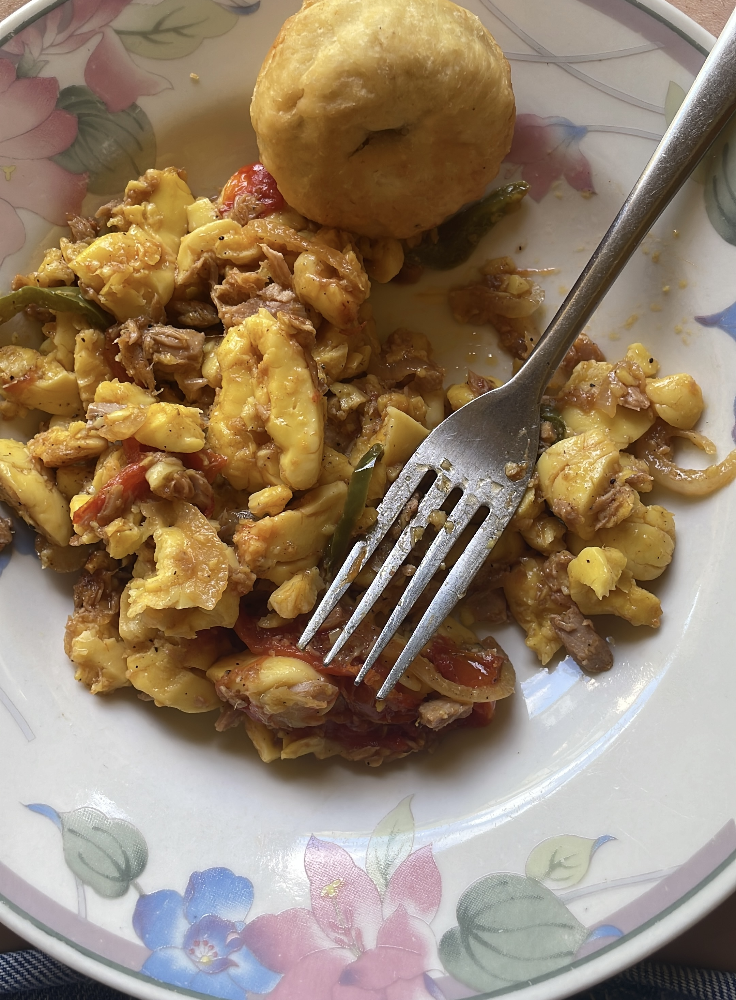

Ackee and Saltfish
Home

Ackee is Jamaica's national fruit. It is commonly eaten with saltfish in the national dish, ackee and saltfish.
Ingredients
- Canned Ackee
- Salted cod fish
- 2 green scallions
- 1 Scotch bonnet pepper
- 1 tomato
- Onion
- Bell pepper
- Oil
- Thyme
Steps
- Prepare your saltfish by either soaking it in water
overnight or boil and drain the salted fish 2-3 times until excess salt is removed.
- Once the saltfish has been boiled and drained
break the saltfish into smaller pieces. Then set aside.
- Heat oil in a large pan over medium heat. Add onions, bell pepper, scallions, thyme and scotch bonnet.
Sauté for 3-4 minutes until the onions have softened.
- Add the saltfish and stir for an additional minute.
- Add the tomato and ackee and cook for another 3-4 minutes until heated through. Season with black pepper.